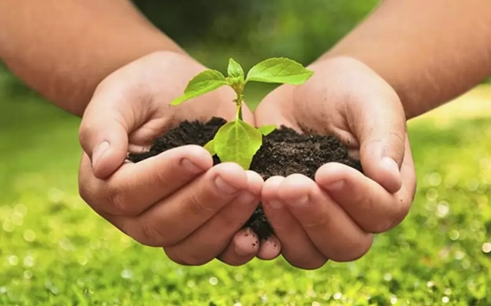

O que é Pulverização sem Agrotóxicos?
A pulverização sem agrotóxicos refere-se ao processo de aplicação de substâncias naturais para proteger as plantas contra pragas e doenças.
Métodos de Pulverização Sustentável

Pulverização com Produtos Naturais
Utiliza substâncias como extratos de plantas, óleos essenciais e compostos minerais para proteção das culturas.
Vantagens da Pulverização sem Agrotóxicos
- Reduz o impacto ambiental
- Preserva a biodiversidade local
- Produz alimentos mais saudáveis
Recursos Adicionais
Para saber mais sobre práticas sustentáveis de agricultura, visite:
Agricultura Possível